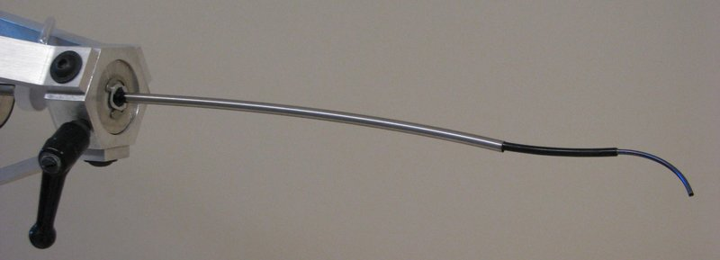

Academic bedside robots · dupont_fagogenis2019
Haptic-vision cath.
Autonomous intracardiac catheter (haptic vision)

1 / 5


- Family
- Academic bedside robots (academic)
- Devices
- its own concentric-tube robotic catheter (three precurved superelastic tubes, OD 2.77 / 2.40 / 1.875 mm, Table 1) carrying the haptic-vision sensor; tools pass through the innermost tube (occluder on a wire inside a delivery cannula, Fig. 6)
- Degrees of freedom
- N.R. as a number: the drive rotates and telescopically extends three tubes relative to each other, forming two telescoping sections (Robotic catheter design; Table 1; movie S1)
- Push
- Other drives
- Twist
- Other
- Tested up to
- Animal
- Sim-to-real
- None found — No simulation-trained controller found for this robot.
Testing
- Highest level
- Animal
- What was tested
- in vivo, Yorkshire swine 84.3 +- 4.7 kg with a custom leaky bioprosthetic aortic valve, transapical access: apex to annulus 5 animals / 90 autonomous trials (teleop 3 / 9, manual 3 / 13); circumnavigation 3 animals / 65 trials; to the leak 5 animals / 83 trials; occluder deployment 8/11 autonomous, 7/9 teleop, 11/13 manual (Results, In vivo experiments); ex vivo pressurized porcine heart for software testing (Fig. 5)
- Key numbers
- autonomous 99% (89/90) apex to annulus; 95% (79/83) to leak; 66% (43/65) for annulus following; time 39+-17 s vs 34+-29 s teleop vs 31+-27 s manual; tip-to-leak distance 3.0 +- 2.0 mm (operator registration) and 2.9 +- 1.5 mm (autonomous) (Results)
Mechanism
- Push (translation)
- other: concentric-tube drive at the tube bases rotates and telescopically extends three precurved superelastic tubes (Robotic catheter design)
- Twist (rotation)
- concentric-tube drive rotates each tube at its base (Robotic catheter design)
- Device range
- tube OD 1.875-2.77 mm; sensor: 8 mm silicone optical window with 2.5 mm working channel (Table 1; Haptic vision sensor design)
- Target anatomy
- transapical aortic paravalvular leak closure (pig)
Sensing and interface
- Force sensing
- no force sensor: tissue contact is inferred from the haptic-vision image (1 mm^3 NanEye CMOS camera + LED in an 8 mm silicone window); tip force set by the contact duty cycle (Fig. 1, Fig. 7)
- Leader and haptics
- Touch (3D Systems) six-DOF joystick for the teleoperated comparator; force feedback N.R. (Computer software design)
- Imaging
- tip camera (haptic vision) for navigation; ultrasound monitor in the OR set-up (Fig. 2B); fluoroscopy N.R.
- Sterility
- drive system draped in plastic in the OR (Fig. 2B); valve and flush system at the inner tube's proximal end keeps air out of the lumen (Robotic catheter design)
Size
- Footprint (mm)
- N.R.
- Mass (kg)
- N.R.
Simulation
- Simulation model
- none found (a data-replay simulator of recorded in vivo images and trajectories was used to develop the navigation software, Fig. 5; it is not a mechanics model of the robot)
- Sim-trained controller
- none found
Versions
- Lineage
- 2019 Sci Robot
Sources
- Autonomous robotic intracardiac catheter navigation using haptic vision · Science Robotics, 2019 · doi:10.1126/scirobotics.aaw1977 [fagogenis2019_autonomous]
Notes
- Notes
- Tip-actuated catheter: overlaps agent A5; listed because it was named in the brief. Coordinator may drop. | 2026-11-08 X3: full text read. Correction: translation_mechanism tendon/tip-actuation -> other: concentric-tube drive (the paper builds the catheter as a concentric tube robot, no tendons); the drive sits on a passively adjustable frame on the OR table
This record
- Read level
- full — full (fagogenis2019_autonomous,, hand-downloaded 2026-11-08)
- Picture
- https://www.therobotreport.com/wp-content/uploads/2019/04/kinematicControl.jpg (lead image of https://www.therobotreport.com/robotic-catheter-brings-autonomous-navigation-into-the-human-body/; credit Pediatric Cardiac Bioengineering Lab, Boston Children's Hospital) ↗ — licence: press image; grade C
- Picture changes
- full-size JPEG 2048x1536; cropped; not upscaled
- Found by
- academic: Search of academic bedside robots.
- Data
- JSON · YAML:
records/robots/dupont_fagogenis2019.yaml - Correction
- Suggest a correction [repository not created yet]